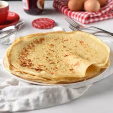

Crepes Recipe

This is a roller coaster ride for a crepe recipe and you are not welcomed.
Why do I say that? Because the crepes can either turn out to be really good and smooth or really bad.
That is why I said "you are not welcomed".
You can also make it as thin as possible or relatively thick if you have slim people!
Ingredients
- Water
- Salt
- Sugar
- Flour
- Vanilla Extract
- Milk or Condensed Milk
Steps
- Sieve The Flour
- Add the dry ingredients first
- Add the Milk ( or Condensed Milk ) and the Water and start mixing thoroughly
- until all the lumps are removed
- After Mixing, use a Ladle to scoop out a good amount of "solution" and pour in a hot pan with oil / butter on it
- Use the back of the Ladle "flatten" the crepe